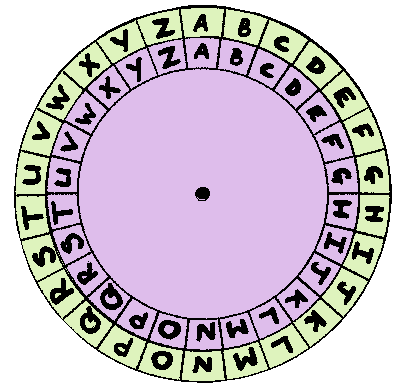
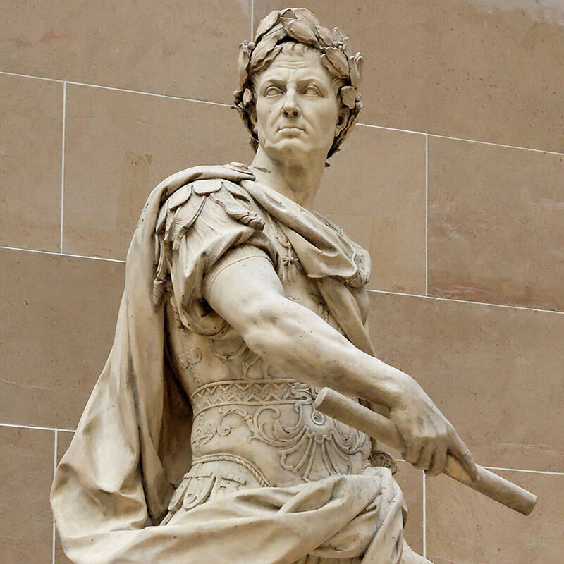
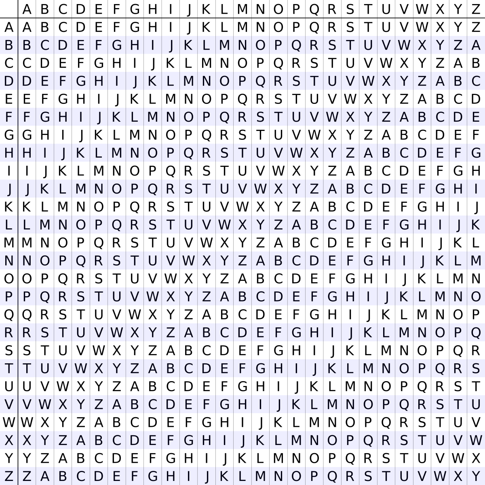
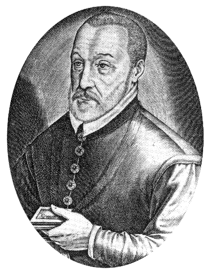
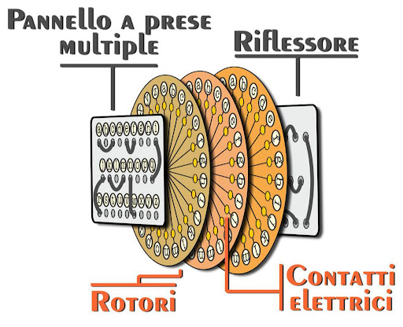
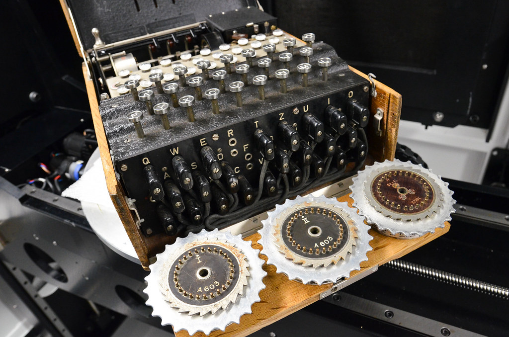

Benvenuti nel Laboratorio Virtuale
Che cos'è la Crittografia?
La crittografia è l'arte e la scienza di proteggere le informazioni trasformandole in un formato illeggibile per chiunque non possieda la chiave corretta. Dal greco kryptós (nascosto) e gráphein (scrivere), questa disciplina ha accompagnato l'umanità per millenni: dai messaggi segreti di Cesare alle moderne comunicazioni digitali che proteggono le nostre transazioni online.
Un sistema crittografico trasforma un messaggio in chiaro (plaintext) in un messaggio cifrato (ciphertext) attraverso un algoritmo e una chiave segreta. Solo chi possiede la chiave corretta può invertire il processo e recuperare il messaggio originale.
Questo progetto didattico nasce per colmare il divario tra la teoria matematica della crittografia e la sua applicazione pratica. Attraverso simulatori interattivi, esploreremo l'evoluzione dei sistemi di cifratura classici, comprendendone non solo il funzionamento, ma anche i limiti di sicurezza.
Obiettivi Formativi
- Comprendere la differenza strutturale tra sostituzione monoalfabetica e polialfabetica.
- Visualizzare l'impronta statistica (frequenze) di una lingua e come sfruttarla.
- Sperimentare l'evoluzione dalla carta alla macchina elettromeccanica (Enigma).
Informazioni Progetto
Corso: Informatica per la creatività, didattica e divulgazione
Tipologia: Sviluppo Strumenti (Tipo 2)
Studenti:
- • Peri Andrea (5415544)
- • Germano Jeffrey (5669424)
1. Il Cifrario di Cesare
Contesto Storico e Funzionamento
Utilizzato da Cesare per comunicare con i suoi soldati, questo è uno dei primi esempi di crittografia militare. È un cifrario a Sostituzione Monoalfabetica basato sulla traslazione.
Ogni lettera del testo in chiaro ($P$) viene sostituita da una lettera che si trova un numero fisso di posizioni ($K$) più avanti nell'alfabeto. L'alfabeto è considerato ciclico (dopo la Z si riparte dalla A).
Assegnando A=0, B=1 ,..., Z=25:
C = (P + K) mod 26
Perché non è sicuro?
Il sistema è estremamente debole per due motivi fondamentali:
- Spazio delle Chiavi Ridotto: Esistono solo 25 possibili chiavi di spostamento (K=1,...,K=25). Un attacco a forza bruta (Brute Force) richiede pochi secondi anche per un essere umano.
- Preservazione dei Pattern: Essendo monoalfabetico, la struttura della lingua non cambia. Se "CIAO" appare due volte nel testo, apparirà cifrato nello stesso modo entrambe le volte (es. "FNDR"). Questo permette l'analisi statistica.


Mappatura Dinamica Alfabeto (Live)
Dimostrazione di Vulnerabilità (Brute Force)
Premi il pulsante per attaccare il Risultato ottenuto sopra provando tutte le 25 chiavi automaticamente.
2. Strumento di Analisi delle Frequenze
L'Impronta Digitale della Lingua
Ogni lingua naturale segue una distribuzione statistica precisa. In italiano, ad esempio, le vocali (A, E, I, O) costituiscono circa il 45% di un testo, mentre lettere come Q, Z, H sono molto rare.
Il Principio di Invarianza
Nei cifrari a sostituzione semplice (come Cesare), l'identità della lettera cambia, ma la sua frequenza rimane invariata.
Se la lettera 'E' è la più frequente nel testo originale, e viene cifrata in 'H', allora 'H' sarà la lettera più frequente nel testo cifrato. L'istogramma delle frequenze non cambia forma, viene solo "traslato" a destra o sinistra.
Distribuzione Lettere (A-Z)
In attesa di dati...
3. Il Cifrario di Vigenère
L'Evoluzione Polialfabetica
Descritto nel XVI secolo da Blaise de Vigenère, questo sistema fu considerato "indecifrabile" per tre secoli. Introduce la Sostituzione Polialfabetica: non si usa più un solo alfabeto cifrante, ma 26 diversi, alternati secondo una Parola Chiave.
Come funziona
Si utilizza la Tabula Recta (una griglia di 26 alfabeti Cesare). Se la chiave è "ABC":
- La 1ª lettera del messaggio si cifra con la riga 'A' (Shift 0).
- La 2ª lettera si cifra con la riga 'B' (Shift 1).
- La 3ª lettera si cifra con la riga 'C' (Shift 2).
Perché è sicuro contro l'analisi frequenze?
Vigenère "appiattisce" il grafico delle frequenze. La lettera 'E' del messaggio originale verrà cifrata a volte come 'E', a volte come 'F', a volte come 'G' (dipende dalla chiave). In questo modo, i picchi statistici della lingua vengono nascosti, rendendo l'analisi vista nel modulo precedente inefficace.


Risultato:
4. La Macchina Enigma
L'Apice della Crittografia Meccanica
Brevettata nel 1918 e usata dalla Germania nella II Guerra Mondiale, Enigma è una macchina elettromeccanica a rotori. La sua complessità risiede nel fatto che il circuito di cifratura cambia fisicamente dopo ogni singola lettera digitata.
Struttura e Funzionamento
La macchina Enigma era alimentata da una batteria e composta da quattro componenti: una plugboard (Steckerbrett) che scambiava coppie di lettere, tre rotori intercambiabili con cablaggio interno disordinato, e un riflettore (Umkehrwalze) che rimandava il segnale indietro. Dopo ogni pressione di tasto, il primo rotore avanzava di uno scatto, cambiando l'alfabeto di sostituzione (come un contachilometri), creando una configurazione sempre diversa.
La debolezza fatale di Enigma era che nessuna lettera poteva mai essere cifrata in se stessa (proprietà del riflettore). Alan Turing sfruttò questa proprietà sviluppando la macchina "Bombe", capace di cercare automaticamente le configurazioni corrette eliminando le combinazioni impossibili. Questo ridusse il tempo di ricerca da mesi a poche ore, permettendo di violare il codice e accorciare significativamente la Seconda Guerra Mondiale.

